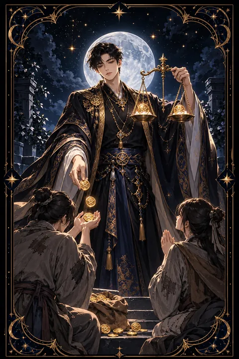

펜타클 6 카드 — 공정한 나눔과 주고받음
펜타클 6 카드 한눈에 보기
펜타클 6 카드 상징 읽기

동네보살의 카드 그림은 전통 라이더–웨이트 덱의 뜻을 새 그림으로 옮긴 것입니다. 아래 상징 설명은 전통 덱의 그림을 기준으로 합니다.
잘 차려입은 상인이 한 손에 저울을 들고 다른 손으로 무릎 꿇은 두 사람 가운데 한 명에게 금화를 건네고 있습니다. 넉넉한 사람이 도움이 필요한 사람에게 가진 것을 나누는 장면입니다.
상인이 든 저울은 수평을 이루고 있습니다. 무작정 베푸는 것이 아니라 상대의 필요와 자신의 형편을 가늠해 알맞게 나눈다는 공정함의 상징입니다.
무릎 꿇은 두 사람은 도움을 받는 입장을 나타냅니다. 한 사람은 금화를 받고 있고 다른 한 사람은 두 손을 내밀고 기다리고 있어 도움이 차례대로 돌고 있음을 보여 줍니다.
이 카드는 주는 사람과 받는 사람이 고정되어 있지 않다는 점을 일깨웁니다. 오늘 받는 자리에 있는 사람이 내일은 나누는 자리에 설 수 있으며 재물은 흘러야 제 역할을 한다는 메시지를 담고 있습니다.
펜타클 6 카드 정방향 뜻
정방향 펜타클 6은 주고받음이 공정하고 원활하게 이루어지는 시기를 뜻합니다. 필요한 도움을 받을 수 있고 여유가 있다면 다른 사람에게 베풀 기회도 생깁니다.
금전 면에서는 빌려준 돈이 돌아오거나 노력에 대한 정당한 보상을 받는 흐름이 좋습니다. 장학금, 지원금, 보너스처럼 외부에서 들어오는 도움이 있을 수 있습니다.
이 카드는 나눔의 태도도 이야기합니다. 받는 입장이라면 부끄러워하지 말고 감사히 받으세요. 주는 입장이라면 생색을 내지 않고 상대의 자존심을 지켜 주는 방식으로 건네는 것이 좋습니다. 재물은 고여 있을 때보다 적절히 흐를 때 더 큰 복으로 돌아옵니다. 고마웠던 사람에게 작은 보답을 하며 관계의 저울을 따뜻하게 맞춰 보세요. 받은 도움은 잊지 않고 기억해 두었다가 형편이 될 때 다른 이에게 이어 주면 좋은 순환이 만들어집니다.
펜타클 6 카드 역방향 뜻
역방향 펜타클 6은 주고받음의 균형이 무너진 모습입니다. 호의 뒤에 조건이나 대가가 숨어 있거나 도움을 준 사람이 이를 빌미로 영향력을 행사하려 할 수 있습니다.
반대로 당신이 일방적으로 베풀기만 하고 돌려받지 못해 지쳐 있을 수도 있습니다. 빌려준 돈을 돌려받지 못하거나 빚이 마음을 무겁게 누르는 상황도 이 카드에 해당합니다.
이럴 때는 관계와 돈의 셈을 분명히 하는 것이 먼저입니다. 빌리고 빌려준 내역을 정리하고 갚을 것은 조금씩이라도 계획을 세워 갚아 나가세요. 조건이 붙은 제안은 선뜻 받아들이기 전에 대가가 무엇인지 확인하는 것이 좋습니다. 저울을 바로 세우면 돈도 사람도 다시 제자리를 찾습니다. 당신이 받는 입장이라면 부담스러운 도움은 정중히 사양하는 용기도 필요합니다. 관계에서 한쪽만 희생하고 있다면 솔직한 대화로 짐을 나누세요.
연애에서 펜타클 6 카드
솔로라면 배려심 깊고 따뜻한 사람과 인연이 닿기 쉬운 시기입니다. 어려울 때 도움을 주고받은 사람에게 호감이 생길 수 있고 봉사나 모임처럼 나눔이 있는 자리에서 좋은 만남이 생기기도 합니다.
함께하는 사람이 있다면 두 사람 사이에 주는 마음이 고르게 오가는 안정된 시기입니다. 상대가 해 준 것에 고마움을 표현하고 당신도 받은 만큼 마음을 표현해 보세요. 한쪽이 늘 맞춰 주거나 경제적으로 한쪽만 부담하는 관계라면 지금이 균형을 다시 맞출 때입니다. 사랑은 계산이 아니지만 어느 한 사람만 지치지 않도록 서로의 몫을 살피는 섬세함이 관계를 오래 지켜 줍니다. 고마움을 말로 표현하는 습관은 작은 일 같지만 관계의 온도를 크게 높여 줍니다. 서로에게 필요한 것을 묻고 채워 주는 과정에서 사랑이 깊어집니다.
재회·속마음 질문에서 펜타클 6 카드
재회 질문에 펜타클 6이 나오면 서로에게 줄 수 있는 것이 무엇인지 따져 볼 때라는 신호입니다. 과거 관계에서 한쪽만 베풀고 한쪽은 받기만 했다면 그 불균형이 헤어짐의 한 이유였을 가능성이 있습니다. 관계를 되살리고 싶다면 상대에게 무엇을 해 줄 수 있는지보다 두 사람이 어떻게 고르게 주고받을지를 먼저 생각해 보세요. 조건을 걸고 마음을 되돌리려는 시도는 오래가지 못합니다. 상대에게 부담을 지우는 선물이나 부탁보다 진심 어린 사과와 감사가 먼저입니다. 두 사람이 서로에게 무엇을 바라는지 솔직하게 나누는 자리가 마련된다면 이전보다 균형 잡힌 관계로 다시 시작할 수 있습니다.
일·금전에서 펜타클 6 카드
일과 직장에서는 공정한 평가와 보상을 기대할 수 있는 시기입니다. 멘토나 윗사람의 도움을 받기 쉽고 당신 역시 후배나 동료를 이끌어 주는 역할을 맡을 수 있습니다. 필요한 지원이나 자원은 떳떳하게 요청해 보세요.
금전 면에서는 주고받는 흐름이 원활해 밀린 대금이나 빌려준 돈이 돌아올 수 있습니다. 여유가 생기면 일부를 나누거나 감사의 표시로 쓰는 것이 좋은 흐름을 이어 가는 방법입니다. 다만 보증이나 큰 금액의 대여는 신중하게 판단하세요. 성과를 기록해 두면 정당한 보상을 요청할 때 든든한 근거가 됩니다. 도움을 받았다면 감사 인사를 잊지 않는 것이 다음 협력을 부릅니다. 후배에게 아는 것을 나누는 일도 당신의 평판을 높여 줍니다.
펜타클 6 카드는 예일까 아니오일까
필요한 도움이 오고 주고받음이 공정하게 이루어지는 카드이니 예로 읽습니다. 뒤집힌 채 나왔다면 숨은 조건이나 한쪽으로 기운 관계를 먼저 확인해야 하는 조건부 답이 됩니다.
자주 묻는 질문
펜타클 6 카드 역방향은 나쁜 뜻인가요?
역방향 펜타클 6은 주고받음의 균형이 무너진 모습입니다. 호의 뒤에 조건이나 대가가 숨어 있거나 도움을 준 사람이 이를 빌미로 영향력을 행사하려 할 수 있습니다.
펜타클 6 카드가 연애 질문에 나오면요?
솔로라면 배려심 깊고 따뜻한 사람과 인연이 닿기 쉬운 시기입니다. 어려울 때 도움을 주고받은 사람에게 호감이 생길 수 있고 봉사나 모임처럼 나눔이 있는 자리에서 좋은 만남이 생기기도 합니다.
타로 카드는 어떻게 뽑나요?
타로 카드 페이지에서 78장을 섞으면 그중 22장이 펼쳐집니다. 마음이 가는 세 장을 고르면 과거·현재·미래 자리에 놓이고, 한 장씩 뒤집어 자리와 방향에 맞는 풀이를 읽습니다. 정방향과 역방향은 섞는 순간 정해집니다.